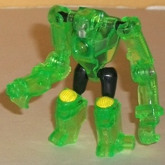
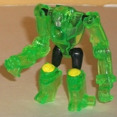
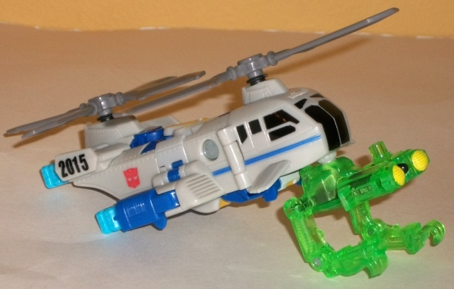
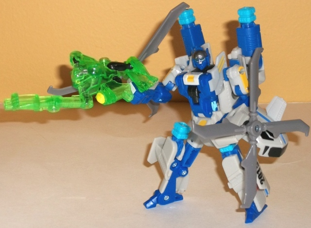
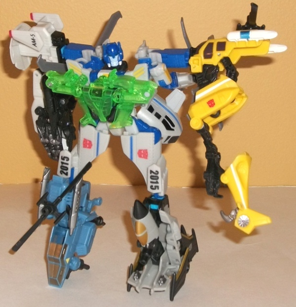

Backwind
Backwind

Allegiance : Minicon
Difficulty of Transformations : Very Easy
Color Scheme : Transparent light green and some black, silver, and flat yellow
Individual Rating : 4.2
Searchlight
w/ Backwind
Backwind

Allegiance
: Minicon
Difficulty of Transformations
: Very
Easy
Color Scheme
: Transparent light
green and some black, silver, and flat yellow
Individual Rating
: 4.2
As is the case with most
of the Power Core Minicons, Backwind's robot mode is definitely his best.
(And by the way, his name is pronounched "Back-WHINED", so no fart jokes
with this guy's name, sorry.) In addition to being completely free of any
alt mode extras, his robot mode also has a pretty unique look to it, a
"strongman" gorilla-esque appearance with relatively long arms and short
legs. His head sculpt also gives him a pretty big chin, which sort of emphasizes
this look. The mold detailing on his arms is also quite impressive, with
details that look like segmented tubes along his upper arms and elbows.
His left arm ends in a hook, while his right ends in a rotary machine gun.
The "lights" from his other modes form his knee caps, which is a pretty
ingenious use of them, though they do hinder knee movement SLIGHTLY because
of their placement. Otherwise Backwind's articulation is extraordinarily
good for a Minicon-- he can move at the shoulders, elbows, hips, and knees,
and all of those except the elbows are on ball joints.
Backwind's weapon modes
are very poor, and definitely suffer because of his excellent robot mode.
They're just yoga-like arragements of his limbs, only with this guy it's
even more obvious than it is with most Power Core Minicons. His vehicle
weapon mode has his arm-claws in the back, while in robot weapon mode he's
ridiculously poses with one arm pointed forward as a "gun" and one of his
legs bent at the knee to (fail to) look like a trigger, I guess. Regardless,
it looks like exactly what it is-- some gorilla-like dude with his arms
extended and his legs folded against his body. The painted lights help
to alleviate this a LITTLE in vehicle mode, but just barely. (Plus, due
to his odd Powerlinx area with Searchlight in that mode, you can't really
have him combine with most other Power Core Combiners in vehicle weapon
mode and have it really make a lick of sense.)
Backwind's torso armor
mode is marginally better than his weapon modes. It's still just obviously
his robot mode in a yoga position, but this time both the arms and legs
fall in line with the overall shape of the torso to form semi-decent armor.
Not the best of the torso armor modes, but far from the worst, certainly.
Overall Backwind has
one of the best robot modes of all the Power Core Minicons, but one of
the worst, ugly weapon modes and a better-than-average armor mode. The
weapon modes-- which is what he usually tends to be in when I'm playing
with him-- really tend to drag him down to near the bottom of the back,
unfortunately.
 Searchlight
Searchlight



Allegiance
: Autobot
Difficulty of Vehicle/Robot Transformation
:
Medium
Difficulty of Torso Transformation:
Easy
Color Scheme
: Light flat gray, dark
blue, and some moderately dark gray, flat yellow, black, light sky blue,
and silver
Individual Rating
: 8.3
Searchlight's alternate
mode is a dual-rotor helicopter, and is quite good for a Power Core Combiner.
Really, the only obvious extras are the four combination ports near the
rear end. His upper "normal" robot arms are also a TAD obvious in the middle
of this mode, but that's fairly minor. The proportions are fairly normal
(with the wings just being a little stubby), and both of the rotors spin
extremely well. The mold detailing is also quite good, with little "rivets"
and vents" added wherever you'd expect them to be. The only thing I really
don't like about said detailing is how his windows look-- they're a bit
too "futuristic" for a line that tends to be at least somewhat more on
the realistic side of things. His overall color scheme of light gray and
dark blue isn't exciting, but it gets the job done and works well enough
for a rescue helicopter. The dark blue in particular is an excellent contrast
color-- frankly I wish the amounts of it and the light gray were switched.
The bits of black, silver, and yellow are decent enough accent colors,
but don't do anything particularly exciting for me. Unfortunately, this
mode doesn't come with any landing gear, due to just how much is going
on here.
Searchlight's robot
mode is also quite good-- again, considering the fact that he has three
modes. His legs are a little skinny, but otherwise his proportions are
pretty good. The only blatant extras here are, again, the combination ports
above his shoulders and knees. The halves of his cockpit for a nice samurai-like
"skirt" behind his waist, and the wings are small enough that hanging off
the sides of his legs is no biggie. His rotors work really well as the
"slicing mechanisms" that they are on the back of his hands, even if they
do get in the way of movement a bit. My main complaint with this mode has
nothing to do with kibble, but rather with the lack of tabs 'n such to
make this mode feel "solid" enough-- there's no tabs or any real connecting
ports to connect his shoulders to his main body, so not only is there a
weird gap there but since a large part of the transformation revolves around
the bits those arms are connected to, his arms tend to move around a bit
at the shoulders in ways you don't want them to in this mode. His overall
articulation is good, though-- he can move at the shoulders, elbows (at
two points), neck, hips (at two points), knees (at two points), and ankles
(though his "skirt" prevents some of the hip movement). One small quibble
I have with his detailing here, though, is with his head design. I like
the circular "helicopter cockpit"-like design on the forehead, but his
face is painted almost like it's a jaw-less skull, with the face being
silver but the jaw being unpainted blue. It just looks weird, especially
for an Autobot.
First off, let's get
the obvious out of the way about Searchlight's torso mode-- yeah, the rotors
are just there peripendicular to the rest of the body and just look weird,
and yes, they do unfortunately spin freely without locking into place (although
the long bars that serve as "Super Searchlight's" shoulders prevent them
from doing a complete rotation). Said shoulders are rather unceremoniously
long pegs and a bit TOO wide-shouldered proportionally, but they get the
job done. His robot arms are also unceremoniously just folded behind his
gestalt shoulders, and are the second-most obvious extra in this mode.
Fortunately, his legs fold up into the torso's upper legs fairly well (even
if it's overly obvious how they do so), and his joints tend to be fairly
stable. For some odd reason, though, both of his hip joints are connected,
so if you move one of his legs, the other automatically moves. Now, you
CAN easily prevent this by simply holding one of the legs as you move the
other, but it's still kinda weird why he would be designed like that. The
main body is the best part-- I love the extra "wings" added to the sides
of the chest, the Powerlinx port flips out very easily so you can stick
a Minicon in armor mode on there if you so desire, and his gestalt head
sculpt is pretty good, if a bit overly detailed in the mouth-area with
a bit too many lines around there.
Searchlight is one of
the better molds from the first wave of Power Core Combiners, particularly
because of how good his vehicle and regular robot modes look-- if it weren't
for the obvious combination ports, you'd be hard-pressed to even guess
he has a third mode going from just his "normal" two. His torso mode is
his weakest out of the three, but still decent, despite the obvious robot
arms behind his back and the awkwardly-placed motors. Mildly recommended.
Reviews by Beastbot